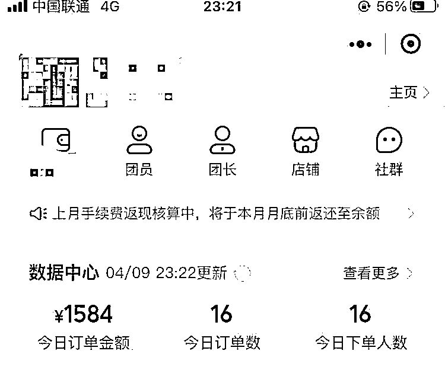
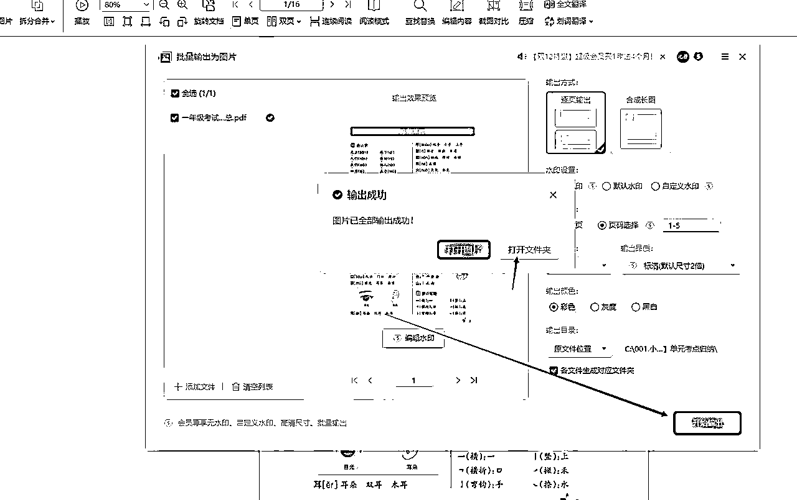

来源：https://nw0dqmriirr.feishu.cn/docx/NHIEdGWFVo9VV6x10DcceVpun6H
2024年已经是第6个月了，你是不是还在到处找项目，无所事事，浪费你的时间！
曾经大家都一样，我觉得做网络的大部分脑子都是灵光的，很多时候不赚钱不是我们的能力不行，而是缺乏有效的赚钱信息。别人吃肉的时候只能喝汤，甚至有时候连汤都没有！
世界上赚钱永远是信息，谁掌握了信息，就等于掌握了致富的掌上密码！
只有开放的信息，才能给你的大脑填充有价值！
我是来自河南郑州的赛罗，生财编号141939，生财第8期成员。
目前，在福州上大学，2022年也就是在我高二的暑假的时候，因为家里的原因导致我必须的跟生活对线，然后经朋友介绍在疫情期间，做灰色产业，巅峰3个月赚了60万，因为年纪太小，经历的太少，没把握住，瞎投资，钱都赔完了，最后还欠了将近二十万，在23年春节前夕借了2000块钱重新创业，开始做闲鱼无货源电商，赚了点钱，在去年9月份把负债还清，之后接触学科项目，刚好我还是学生，对这块资料卷子什么的也挺熟，很感兴趣，一直做到现在，6个月将近赚了13万
在学校申请了工作室组建了自己的小团队
项目主要是包括三个板块块：虚拟产品项目底层逻辑，抖音快手小红书视频号引流，微信成交。
（抖音，小红书，快手，视频号➡️微信➡️微信➡️卖教辅资料变现）
在这里我给大家个建议，我做教辅项目遇到很多问题，根据我的经验，我给你们个建议，别走弯路
大家重点做抖音和小红书，抖音最重要，只要抖音账号做起来了，流量是很稳定的，小红书前期爆发力强，但是小红书目前引流管控比较严格，商业化太浓，做小学资料项目，素人号有些笔记会触发行业认证，就是让你交钱开企业蓝V号，这种情况，我们把触发这个的笔记删除，重新发别的，目前只有这样，如果有条件，想做好小红书，可以办理个体营业执照和出版物许可证，这个得投入一定的钱，执照200左右，出版物许可证1200-1800，淘宝要找，蓝V认证一个号是600,一般认证2个，就是1200.如果蓝V号笔记爆了，就要速度投聚光，投聚光首充5000，每天烧100，连续三天，才有私信豁免权，可以无限发私信。所以，我建议大家重点重点重点做抖音，万粉号一旦起来，流量每天自动进微信，因为我们在简介和封面留微信号。抖音号的生命力很持久，而小红书，生命周期最长一个月，短的几天就违规限流了。我说的意思是，抖音我们放在第一位，小红书为辅，视频号也可以做，头条也可以做，重点就是抖音，普通人改变命运，我觉得就是抖音。后期抖音有几万粉了，可以开橱窗带货，或者走带货的路子，都是不错的，教辅是需求很大的项目，大家一定要重视
主要通过抖音，小红书，视频号，快手等渠道，发布内容，引流到微信，私聊成交后，发网盘链接或者拉用户进QQ群会员资料群
细分下来就三个步骤：
抖音，小红书，快手，视频号：注册账号 养号 发笔记 回复私信
微信：打造朋友圈 聊天 收钱
百度网盘：发课程
先算一笔账，真的能月入过万吗？
每天引流40人，20％的转化，
40*20％*49.9=399一天，399*30=11970约等于12000一个月，则月收入1.2万左右。
这还只是卖1-6年级教辅资料的钱，如果加上快团团淘宝客教周边【一个月5000左右】，做的好的，一个月5-9万没什么问题。
23年12月，我开始做学科项目，到四月份才渐渐稳定下来：每天稳定在1000+

在我们百度网盘里去找，很多资料是word格式和PDF格式，排版或者修改一下导出图片就可以。
选择一年级考试高频考点汇总文件，用WPS打开。点击输出为图片
选择[逐页输出】 选择【无水印】 【页码选择】1-5页 格式选择PNG 输出颜色：彩色
选择开始输出

这是我们导出的图片
视频笔记制作
打开剪映软件，开始制作，点击导入，导入刚才wps导出的图片

导入进来，点击蓝色+
为了完播率，视频时长要缩短到5-8秒，截图中，刚导入的视频总长度为25秒，太长了，我们要把他缩短到5-8秒
在轨道，拖拽图片边缘白色顺杆，缩短每个图片时长

现在视频已经缩短到5秒多了
接下来，我们要制作翻书效果的视频，这个是目前比较容易爆视频的类型
转场---幻灯片---翻书
添加专场
添加后的界面
最后，点击导出，导出参数默认即可
制作完成的视频。这就是翻书效果，后面你们熟练了之后，可以加文案，加文案朗读，加带文案翻书等效果。
✅肺腑之言：由于每个人的审美不同，不要自己瞎搞设计，自己的审美一定有局限性的。建议直接模仿同行的笔记制作，因为那是被验证过数据好的，是用户喜欢的，这才是聪明之举
这个项目关键在于养号，经过测试没有养过号的和养过号的流量相差非常大
我们做引流肯定离不开养号，那么这里就详细给大家讲几个养号的小技巧，正常情况下。我们3天内是可以养好一个账号的。
首先你搞懂养号的目的，我们是为了让抖音知道我们是一个高质量用户，不是僵尸号，营销号。我们养号，让抖音知道我们的兴趣标签，这有助于我们发短视频的流量分发和流量精准推送。所以我们养号过程中的注意事项和这些目的息息相关。
像注册很久没用的抖音号，收到抖音警告和降权的以及播放量经常在300以下的账号，是必须要坚持养号的。
养号用流量最好，如果你的手机号只有1-2台，用家里无线也可以养号。如果号多，一定不要一个WiFi下超过三个号去连接。
模拟真人的行为，每天至少刷半个小时-1个小时，期间可以给别人互动，点赞+评论+收藏等等，不要频繁关注，收藏，刷10个，偶尔点赞 关注 收藏1-3个，就可以了。
在养号的过程中可以了解这个市场，了解同行，你才能做好！
看直播互动，累计在线时长。可以先关注两三个比较火的账号，以及本账号评论区的意向客户，以达到未来你发笔记精准推送的效果。
两天后修改自己的个人信息，最好一次性修改好，中间不要频繁更改。
看直播的时候我们可以找相关领域的直播，像小学资料，小学语文，也可以选在线人数2万以上几万大咖的直播间，从早挂到晚都没有事。
你去看人直播，不要很快切换直播间，你在里面看人讲解答题，期间偶尔互动，点点赞评论，加个粉丝灯牌，真实点就可以！
一定要多看垂直领域的内容，比如我们做小学资料，那视频就要多搜小学资料，一年级资料，二年级自来哦，小学语文，小学知识点，小学期末等等，多看小学资料等这些。
就像平时多看小姐姐跳舞一样，你看的越多他推送越多，就形成了一个循环。你偶尔点进去一个人的主页，看看他其他的作品，这是很真实的养号操作。
切记要看垂直领域的视频要看完，比如刷到小学资料相关的就从头看到尾，看到无关领域的快速划过，这样大数据就掌握了你的喜好，会给你推更多小学资料的内容。
养号，我们就搜这些关键词：小学语文，小学知识点，小学等，然后，多看同行做的好的笔记，让平台知道你喜欢的内容，搜索后，会出现非常多的下拉词，这几句是用户搜索的比较多的 词。
搜索关键词的目的：一方面是让系统判定我们对这个领域感兴趣，另一方面我们可以了解这个行业的情况。
养号3天后，一打开抖音，首页推荐你要做的小学资料领域的视频，占60％，就算成功了。
随便发一个视频，抖音一两个小时给你推送400-500浏览量，就说明这个号养成了，你接下来可以小学资料类型的垂直作品了。
如果没有达到这个播放量，那也不要灰心，试着去跟一下最近的热点，比如小学期末考试，小学月考，小学期中等，坚持发，也有可能会火。
1.尽量一机一卡一号，正常的账号注册，全程不要连WiFi；
2.2个手机号注册2个小红书号，先从运营好2个账号开始，做起来之后建议运营增加至3个号；
3.注册时，参考小学儿童爸妈，小学教师的身份选择年龄（家长大概在32-38岁，老师根据人设不同，年龄也不同，但也建议选择在32-38岁之间），系统会根据你的年龄，给你一次手动打标签的机会。
不同年龄可选择的标签不同，站在项目角度，尽可能选“小学学习”，“家庭教育”相关标签。
PS：在刷对标的时候，前两天按照 小学学习内容：其他标签=5：1的比例来刷推荐内容，让系统判断你是个正常用户，第三天开始，只刷小学学习相关内容。另外，养号期间简介不要留任何联系方式！！！包括微信，公众号，微博号，邮箱，链接
4.注册时背景：不要留任何联系方式，与头像，昵称调性一致即可
注意事项：
怎么刷对标？
第一天刷对标，按照学习内容：其他标签=5：1的比例来刷推荐内容，让系统判断你是个正常用户，有相同领域账号，适当点点赞，关注收藏评论一下，大约进行四十分钟的养号刷对标操作（不需要一次性刷够40分钟，可以早中晚利用碎片时间刷一会）
每天关注2-3位粉丝量1w以上的相同领域对标账号，小红书会更容易把你推荐给关注这一领域的用户
浏览笔记要求：速度不要太快，最好能够看完包括图片，文字，视频在内的所有内容，起码是一般以上的内容，停留1~2分钟
在刷对标的过程中关注的博主有三个作用
1.提高我们账号的垂直度
2.后面可以抄他们的爆款笔记，借鉴正文，标题
3.多看，多思考优质账号是怎么运营的
填写账号信息：
头像：知性的女性图片，与孩子一起的合照，或者关于书屋学习氛围浓厚的环境照片（都可以网上找）
昵称：如小学资料，一年级资料，xx年级资料，xx老师，xx书屋等
简介：不要留微信等，（直接抄同行的即可，不建议简介里放微信号，很容易被和谐，看不到的）
例如：
小学熊孩子宝妈丨在鸡娃路奋斗
累计花费数百小时✅为孩子整理资料
涵盖小学各个板块✅满足学习需要
希望孩子们越来越优秀✅打好小学基础
综合最简单的办法：抄同行，只需要执行力，不需要脑力！
和第一天一样，按照学习内容：其他标签=5：1的比例来刷推荐内容，让系统判断你是个正常用户，有相同领域账号，适当点点赞，关注收藏评论一下，大约进行四十分钟的养号刷对标操作（不需要一次性刷够40分钟，可以早中晚利用碎片时间刷一会）
每天关注2-3位粉丝量1w以上的相同领域对标账号，小红书会更容易把你推荐给关注这一领域的用户
浏览笔记要求：速度不要太快，最好能够看完包括图片，文字，视频在内的所有内容，起码是一般以上的内容，停留1~2分钟
和前两天不同，第三天开始，只刷学习相关内容，有相同领域账号，适当点点赞，关注收藏评论一下，依旧每天进行大约40min养号操作
每天关注2-3位粉丝量1w以上的相同领域对标账号，小红书会更容易把你推荐给关注这一领域的用户
浏览笔记要求：速度不要太快，最好能够看完包括图片，文字，视频在内的所有内容，起码是一般以上的内容，停留1~2分钟
只刷学习相关内容，有相同领域账号，适当点点赞，关注收藏评论一下，依旧每天进行大约40min养号操作
每天关注2-3位粉丝量1w以上的相同领域对标账号，小红书会更容易把你推荐给关注这一领域的用户
浏览笔记要求：速度不要太快，最好能够看完包括图片，文字，视频在内的所有内容，起码是一般以上的内容，停留1~2分钟
薯管家，小红书成长笔记，创作者小助手等官方账号，不用太多
并就其发布的内容，适当浏览，点赞，评论
内容基本要求：不引流，纯分享，只养号
照图片制作流程，制作对应图文
只刷学习相关内容，有相同领域账号，适当点点赞，关注收藏评论一下，依旧每天进行大约40min养号操作
每天关注2-3位粉丝量1w以上的相同领域对标账号，小红书会更容易把你推荐给关注这一领域的用户
浏览笔记要求：速度不要太快，最好能够看完包括图片，文字，视频在内的所有内容，起码是一般以上的内容，停留1~2分钟
发布后不要自己频繁浏览，不要过度解读数据！这次发内容只为提高账号权重，账号升级
内容基本要求：不引流，纯分享，只养号
照图片制作流程，制作对应图文
只刷学习相关内容，有相同领域账号，适当点点赞，关注收藏评论一下，依旧每天进行大约40min养号操作
每天关注2-3位粉丝量1w以上的相同领域对标账号，小红书会更容易把你推荐给关注这一领域的用户
浏览笔记要求：速度不要太快，最好能够看完包括图片，文字，视频在内的所有内容，起码是一般以上的内容，停留1~2分钟
发布第五天准备的内容
准备第七天发布的内容
内容基本要求：不引流，纯分享，只养号
照图片制作流程，制作对应图文
只刷学习相关内容，有相同领域账号，适当点点赞，关注收藏评论一下，依旧每天进行大约40min养号操作
每天关注2-3位粉丝量1w以上的相同领域对标账号，小红书会更容易把你推荐给关注这一领域的用户
浏览笔记要求：速度不要太快，最好能够看完包括图片，文字，视频在内的所有内容，起码是一般以上的内容，停留1~2分钟
发布第六天准备的内容
整个养号过程基本结束，从第八天开始就可以在评论区造势引流了
1.账号出现违规提醒时，需要重复上面的养号流程，如果流量限制严重，可考虑注销重开
2.参考小红书官方等级体系，发布一些视频内容，用来提升账号等级。视频内容可以是滚动录屏学习自立哦啊，再配上音乐和文字水印
3.前一个月最好天天发，至少养号结束后一周要天天发，保证输出的质量和频率
4.个人号引流有风险，别怕死号。如果想长期发展，可以申请一个企业号，简单来说就是花钱买平安，企业号优势如下
A.封号概率比个人号低很多
B.有些人只评论，不关注，需要我们主动私信，企业号主动私信次数比个人号次数多
我：你好家长需要几年级的资料呢
客户：我要2年级的
我：有的呢，稍等，发给您
这是2年级语文资料，及时保存哈
PS：这里注意，给客户发2-4个任意单个资料，不要多发
客户：谢谢你的资料
我：送您一份，咱们资料，都是电子版，都可以下载打印
如果孩子需要更多有价值有用的学习资料，建议进我们的会员群，
☄️☄️会员群费用介绍
49💰 /一学期
69 💰/任选两个学期
✅一学期有1000多份资料，一份不到1分钱
㊙️永久会员💰299
🉐️1一6年级学科资料＋全网爆款网课视频资料❗️❗️
🌹打开图片扫描付款
付款后，给我截图☘️
稍后邀请你进微信会员群，QQ会员群，永久会员还要加入视频网课网盘群
紧接着发海报图和赠送网课海报图，提高成交率

说实话，除了遇到不可控因素，或者是政策影响之外，是可以长期操作的，不可控因素这些都是几率很小的。
这个项目前景还是很好的，因为这些资料相比其他虚拟资料不敏感，而且我们提供的资料，都是无版权的，绝对安全！对各大平台也没什么限制，所以说是一个可以长期操作的项目。
目前我们团队测试下来，也没遇到账号禁言的问题，封号的问题更没有，但是操作其他创业类引流文案视频等等，就会出现限流 ，禁言封号等，亲自尝试过，所以我们知识付费项目在做流量的时候，也会避免这些易封号的操作。
我妹妹在读小学，我朋友的弟弟读初中，因为现在学校布置的做也不多，所以这些家长们，天天在找一些学习资料，相当的卷啊，需要课外去提升，去书店买各种资料，又贵，写了又不能再往上涂，所以在网上在资源是最划算的，一套一年级的试卷，就卖个29.9，几十上百张试卷，谁不乐意啊，花个399加个初中单科会员，比如数学，谁不乐意啊，你看，搞这个的，动不动就是几千人群，产值居然有100多万，吓死个人：
最后，感谢生财有这么好的搞钱氛围和环境，大家一块搞钱加油。
感谢你看到这里，全文完。如果大家还有关于学科项目方面的疑问，也欢迎在评论区留言问我。